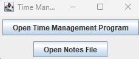
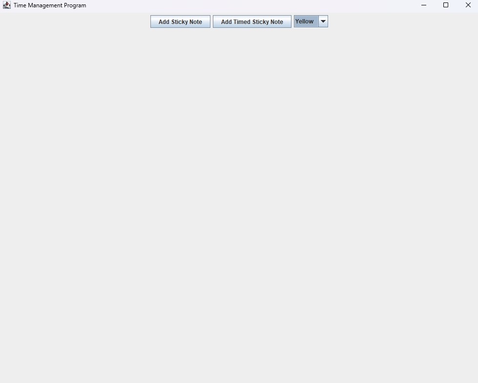
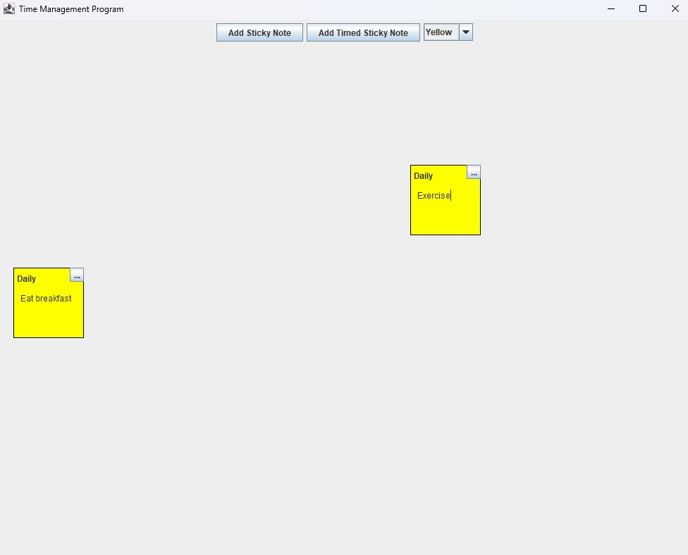
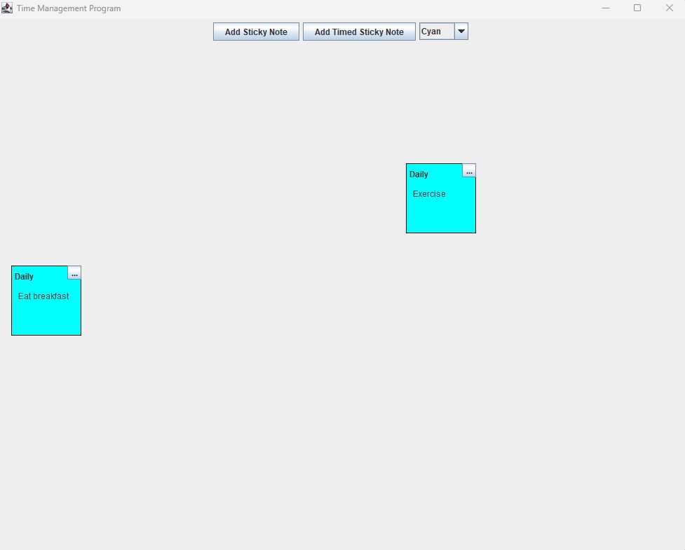

"Sticky Note" Project (Paused)
The Sticky Note project is a project originating in Java to create a time management
application. Its goal is to apply the principles of Kanban to a time management app
as well as provide the functions of a standard time management app.

The Kanban Time Management app starts on a screen with two options: Starting a new
"board" or opening a saved board. Kanban data can be saved into a json file, which can be read to recreate previous boards.

The main part of the application allows you to add virtual sticky notes to a board, up to 10, and name them whatever you'd like as well as write whatever you'd like on them.
There were plans for additional features such as a timed sticky note, but it is not working as of this moment.

Sticky notes can be moved however one would like, allowing you to manipulate them in such a way to suit your needs, whether it is brainstorming, setting up tasks for the day, or anything else.

There were also plans for placing sticky notes of different colors, possibly individually, to further increase the tools that can be utilized, but this was not achieved at the time.